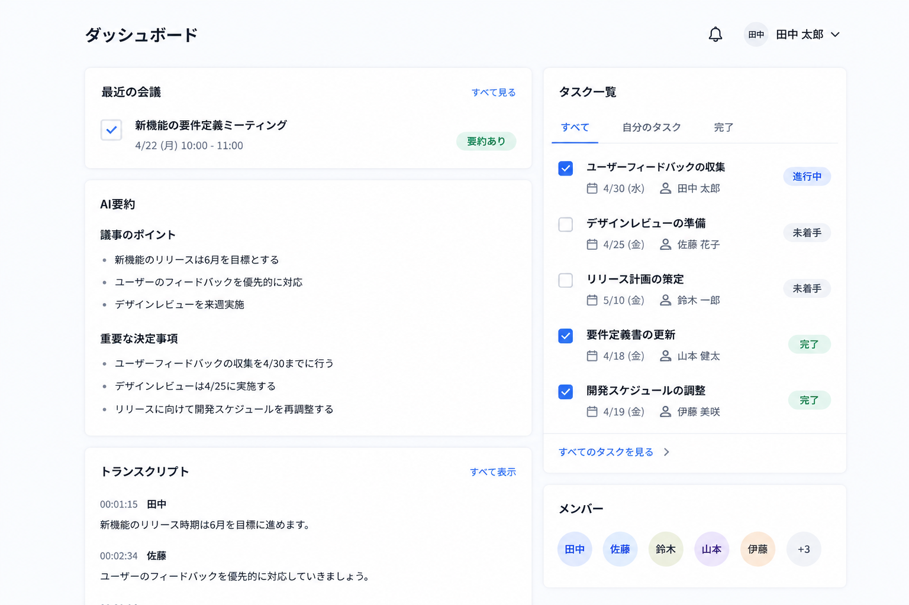
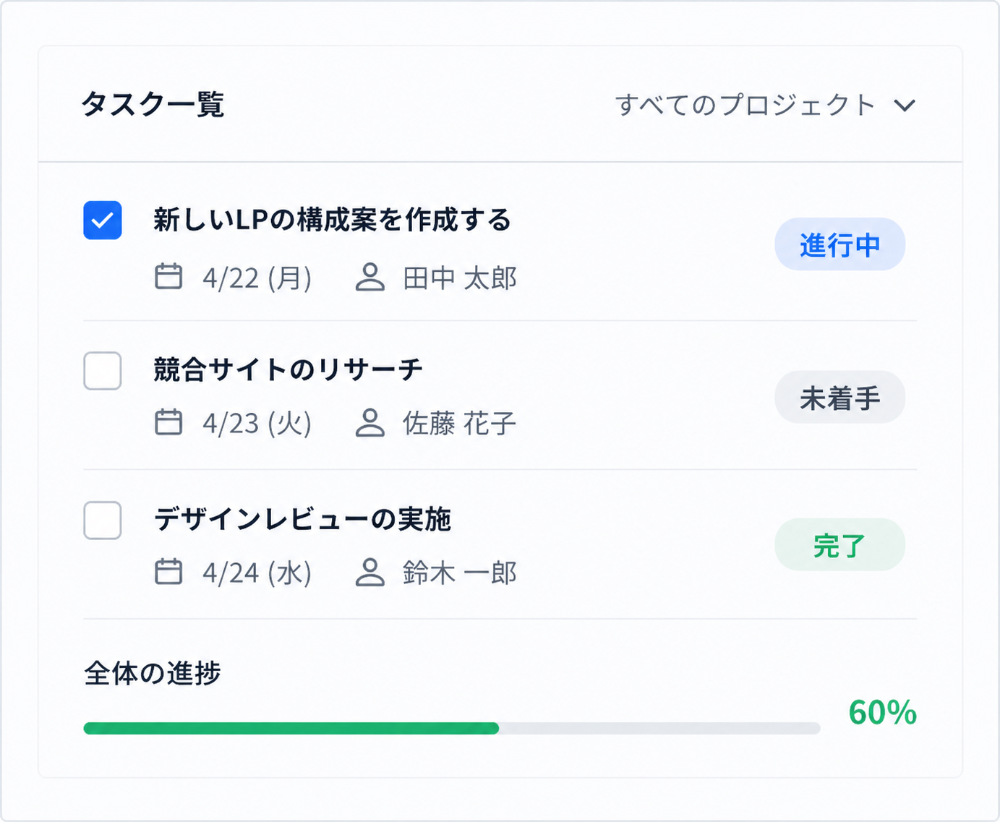
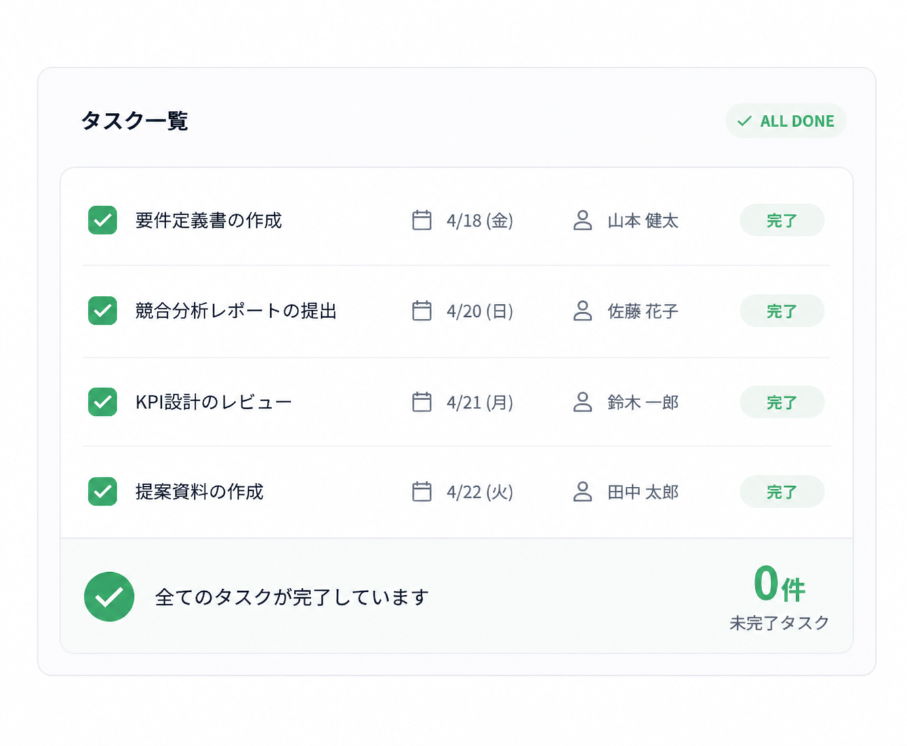
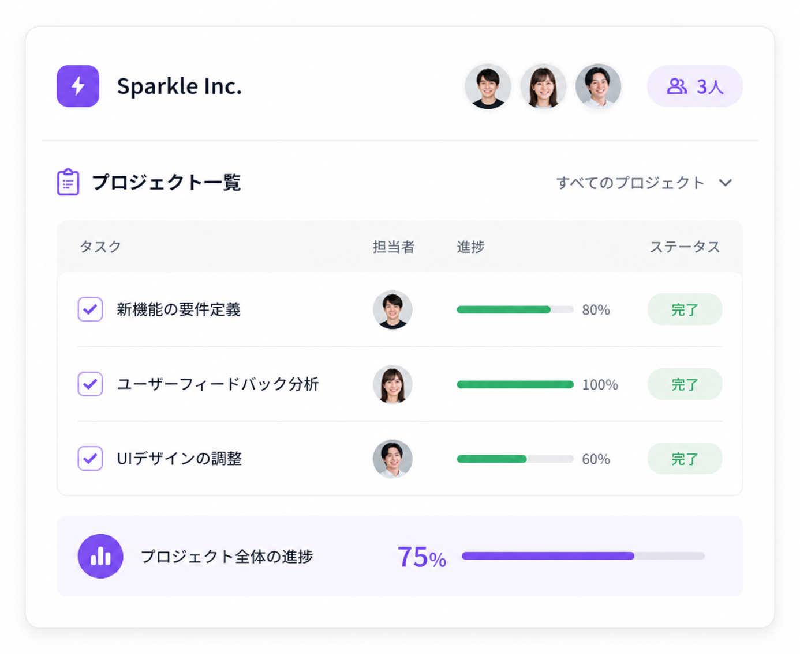

IT・ソフトウェア
NackVision
タスク整理時間
90%削減
Logtaskを導入いただいた企業の
成果をご紹介します。
導入企業の平均効果
会議後のタスク整理時間
90%削減
IT・ソフトウェア
タスク整理時間
90%削減
マーケティング・広告
施策の実行スピードが
2.3倍に
コンサルティング
抜け漏れの件数が
ゼロに
製造業
会議時間の価値が
最大化
人材・採用
情報共有の工数が
80%削減
スタートアップ
少人数でも
高い生産性を実現

タスク整理時間
1時間 → 10分 90%削減
タスクの抜け漏れ件数
月平均12件 → 0件 ゼロに
チームの情報共有工数
週5時間 → 1時間 80%削減
※2024年1月〜3月の導入前後比較（同社調べ）
マーケティング・広告
タスクが可視化され、チーム全体の動きがスムーズに。 クライアント満足度も向上。

実行スピード
2.3倍工数削減
70%コンサルティング
会議内容からタスクが自動で洗い出されるため、 重要なアクションの漏れがなくなりました。
抜け漏れ件数
ゼロ顧客対応品質
向上
スタートアップ
少人数チームでも、タスク整理がシンプルに。 開発スピードが加速しました。

開発スピード
1.8倍会議時間の削減
60%
担当者のコメント
議事録に時間を使うことがなくなり、議論そのものに集中できるようになりました。 タスクの抜け漏れもゼロになり、チームの生産性が大きく向上しました。
プロジェクトマネージャー 鈴木様